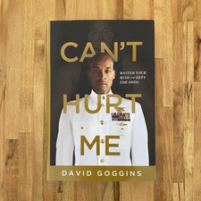

Library › Self-Improvement
Can't Hurt Me — Summary & Key Lessons

Master your mind and defy the odds — from abused, obese, and broke to Navy SEAL and ultra-endurance legend.
📖 OPEN THE FULL INTERACTIVE BREAKDOWN →🌐 Read it in Hindi, Hinglish, Gujarati, Tamil & 22 more languages — free, with audio.
💡 The Big Idea
Goggins' life is the argument: a childhood of violent abuse and poverty, prejudice, learning disabilities, a 300-pound body spraying cockroaches for a living — transformed by self-confrontation into the only man to complete SEAL training (three Hell Weeks), Army Ranger School, and Air Force TACP training, plus 60+ ultra-marathons and a pull-up world record. His system: brutal honesty with yourself (the Accountability Mirror), deliberately seeking discomfort (callousing the mind), the 40% Rule (when you feel done, you're barely warm), and building a Cookie Jar of past victories to raid mid-suffering. Motivation is worthless; discipline and self-talk under fire are everything.
🧠 The 6 Key Lessons
Lesson 1: The Accountability Mirror
Chapters 1–2: I Should Have Been a Statistic / Truth Hurts
Goggins' turnaround began with radical self-honesty: standing at the mirror and telling himself the unvarnished truth — you're fat, you're lazy, you're lying about why. He covered the mirror in Post-it notes: each one a flaw to fix or a task to complete, in the rawest language, because soft talk produces soft results. The Accountability Mirror separates what happened TO you (real, and worth acknowledging) from what you're DOING about it (yours alone). Society sells comfortable self-deception — victimhood, excuses, 'realistic expectations'; the mirror sells nothing and reflects everything. All change starts at inventory.
📖 Example: At 24, Goggins weighed 297 pounds, worked nights spraying restaurants for cockroaches, and ate chocolate shakes for breakfast. After seeing a SEAL documentary, he faced the mirror and said what nobody else would: 'You're a fraud.' To qualify for SEAL… Read the full example →
⚡ Do this: Do the mirror tonight: write your ugliest truths on Post-its — the excuses, the lies, the softness — in language you'd never say publicly. One note comes down only when its truth is fixed.
Lesson 2: Callous Your Mind: Do Something That Sucks Daily
Chapters 3–4: The Impossible Task / Taking Souls
Hands callous through friction; minds callous the same way. Every time you voluntarily do what you don't want to do — the cold run, the early alarm, the hard conversation — you thicken the layer between stimulus and surrender. Goggins' prescription: schedule discomfort daily, specifically the discomfort you most avoid, because the avoidance itself marks the growth edge. Comfort is a slow poison sold as a reward: the padded life produces a mind that folds at the first hard contact. The calloused mind doesn't stop feeling pain — it stops treating pain as a stop signal and reclassifies it as information: proof of being at the frontier.
📖 Example: During Hell Week — 130 hours of continuous cold, wet, sleepless training that breaks most candidates — Goggins discovered 'taking souls': performing so far beyond expectation while suffering (smiling through surf torture, leading boat races on broken legs)… Read the full example →
⚡ Do this: Institute the daily suck: one thing every day that you actively don't want to do — cold shower, extra rep, dreaded task first. Log it. The streak is the callous forming.
Lesson 3: The 40% Rule
Chapter 5: Armored Mind
When your mind screams that you're finished — legs done, willpower gone, quit now — you are at roughly 40% of actual capacity. The brain is a paranoid governor, engineered to preserve comfort margins and trigger surrender long before physical limits; it lies in the language of certainty ('you CANNOT go on'). Everyone who has pushed past the wall knows the lie firsthand: the second wind exists, then a third. Accessing the other 60% requires practice suffering — you can't reason your way past the governor in the moment; you build the override in training, one 'one more rep after done' at a time. Most people die never having met their real limits, only their governor's first offer.
📖 Example: Goggins entered the San Diego One Day — 100 miles in 24 hours — having never run more than 20 miles, on essentially no training. At mile 70 his body catastrophically failed: broken metatarsals, kidney damage, sitting in a lawn chair unable to stand. The… Read the full example →
⚡ Do this: Next time you hit 'done' in any workout or work session, do 5% more — one more set, ten more minutes. Do it every time. You're recalibrating the governor by evidence.
Lesson 4: The Cookie Jar
Chapter 6: It's Not About a Trophy
Mid-suffering, the mind erases your competence: at mile 80, you cannot remember ever succeeding at anything. The Cookie Jar is the counter-weapon: a deliberately maintained mental inventory of your hardest-won victories — every time you were counted out and delivered anyway — that you reach into WHILE suffering, pulling out proof against the mind's propaganda. It isn't nostalgia; it's tactical: past evidence deployed against present doubt. The jar requires stocking (write the victories down; the mind won't volunteer them) and practicing the reach, because under duress you default to whatever you've rehearsed. Goggins' jar includes the abuse survived, the 106 pounds, Hell Week ×3 — receipts, not affirmations.
📖 Example: During his second 100-miler, hallucinating and broken at 3 a.m., Goggins reached into the jar: the kid who taught himself to read with flashcards after teachers wrote him off; the man who passed the ASVAB on the second try after studying six hours a day;… Read the full example →
⚡ Do this: Build your jar tonight: write every against-the-odds win you've ever had, small included. Memorize the top five. Next crisis, reach in deliberately — mid-rep, mid-meeting, mid-panic.
Lesson 5: Remove the Governor: Uncommon Amongst Uncommon
Chapters 7–8: The Most Powerful Weapon / Talent Not Required
Reaching one summit installs a new temptation: coast on the credential. Goggins' rule — be uncommon amongst uncommon: whatever peer group you level up to, refuse its comfortable average too. Talent is real but wildly overrated; the compounding variables are obsession, repetition, and refusing ceilings on schedule. His formula for the unqualified: outwork the credentialed at such a rate that the gap closes on effort alone — and treat every gatekeeper's 'no' as scheduling information, not verdict. The greeting-card version of potential says follow your gifts; Goggins says gifts are the start line others got — the race is still run on volume of suffering absorbed.
📖 Example: After SEALs — already the top fraction of a percent — Goggins refused the plateau: Ranger School (top honor man), 60+ ultras, and the pull-up world record, which he failed publicly TWICE (torn hands, on live television) before completing 4,030 pull-ups in 17… Read the full example →
⚡ Do this: Find where you've gone average within your above-average group. Set one goal that your current peer group would call excessive — and announce the attempt, so retreat costs something.
Lesson 6: Scheduled Suffering & the After-Action Review
Chapters 9–11: Uncommon Amongst Uncommon / Empowerment of Failure
Sustainability tools for a savage philosophy: govern the week, not just the workout — audit your schedule in 15-minute blocks to find the fat (everyone claims busy; the audit shows the phone hours), compartmentalize effort into scheduled hard blocks so intensity has structure, and after every failure run a full After-Action Review: what worked, what failed, what changes — written, unemotional, and then re-attack. Goggins' failures (ASVAB twice, SEAL attempts, pull-up record twice, heart surgery mid-career) each got the AAR treatment; self-pity got none. The loop is the lifestyle: attempt beyond capacity → fail or finish → review honestly → recalibrate → re-enter. Repeat until the governor learns who's driving.
📖 Example: The pull-up record AAR after the second public failure: grip failed, not back — so he changed bar diameter, tape pattern, rep cadence, and hydration schedule; identified that media cameras had rushed his early pace; moved attempt three to a controlled gym.… Read the full example →
⚡ Do this: Run a 3-day time audit in 15-minute blocks — find your hidden hours. Then AAR your last significant failure on paper: what worked / what didn't / what changes. Re-attempt within a month.
✅ 5-Step Action Plan
- Do the Accountability Mirror with Post-it honesty tonight.
- One daily suck, logged — build the callous streak.
- At every 'done,' add 5% — recalibrate the 40% governor weekly.
- Stock the Cookie Jar; memorize your top five receipts.
- Time-audit 3 days, AAR your last failure, and re-attack within 30 days.
💬 Best Quotes from Can't Hurt Me
- “You are in danger of living a life so comfortable and soft that you will die without ever realizing your true potential.”
- “When your mind is telling you you're done, you're really only 40 percent done.”
- “Be more than motivated. Be literally obsessed.”
Interactive version: mark lessons as read, listen in your language, share quote cards.